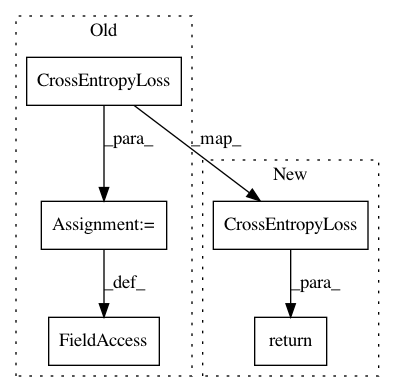

49e58fcd4fcbc3b596a1fced1f74b9a63464f0e8,parlai/agents/seq2seq/seq2seq.py,Seq2seqAgent,build_criterion,#Seq2seqAgent#,197
Before Change
if self.opt.get("numsoftmax", 1) > 1:
self.criterion = nn.NLLLoss(ignore_index=self.NULL_IDX, reduction="sum")
else:
self.criterion = nn.CrossEntropyLoss(
ignore_index=self.NULL_IDX, reduction="sum"
)
def batchify(self, *args, **kwargs):
Override batchify options for seq2seq.
kwargs["sort"] = True // need sorted for pack_padded
After Change
if self.opt.get("numsoftmax", 1) > 1:
return nn.NLLLoss(ignore_index=self.NULL_IDX, reduction="sum")
else:
return nn.CrossEntropyLoss(ignore_index=self.NULL_IDX, reduction="sum")
def batchify(self, *args, **kwargs):
Override batchify options for seq2seq.
kwargs["sort"] = True // need sorted for pack_padded
In pattern: SUPERPATTERN
Frequency: 3
Non-data size: 5
Instances
Project Name: facebookresearch/ParlAI
Commit Name: 49e58fcd4fcbc3b596a1fced1f74b9a63464f0e8
Time: 2019-08-12
Author: ahm@fb.com
File Name: parlai/agents/seq2seq/seq2seq.py
Class Name: Seq2seqAgent
Method Name: build_criterion
Project Name: facebookresearch/ParlAI
Commit Name: 49e58fcd4fcbc3b596a1fced1f74b9a63464f0e8
Time: 2019-08-12
Author: ahm@fb.com
File Name: parlai/core/torch_classifier_agent.py
Class Name: TorchClassifierAgent
Method Name: build_criterion
Project Name: facebookresearch/ParlAI
Commit Name: 49e58fcd4fcbc3b596a1fced1f74b9a63464f0e8
Time: 2019-08-12
Author: ahm@fb.com
File Name: parlai/core/torch_ranker_agent.py
Class Name: TorchRankerAgent
Method Name: build_criterion